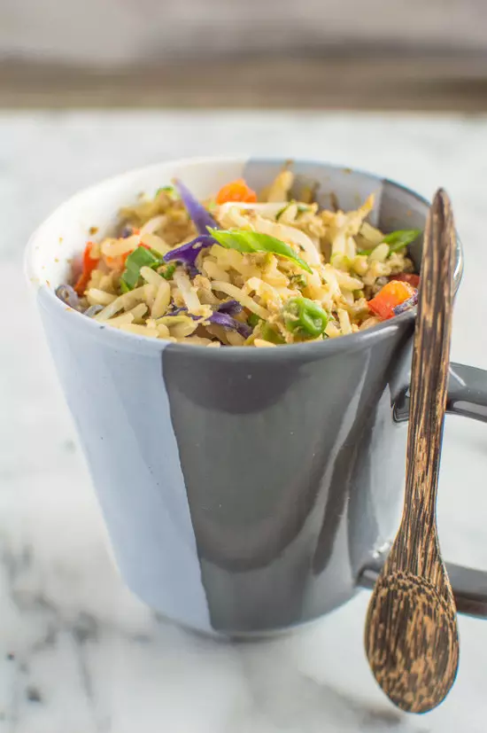
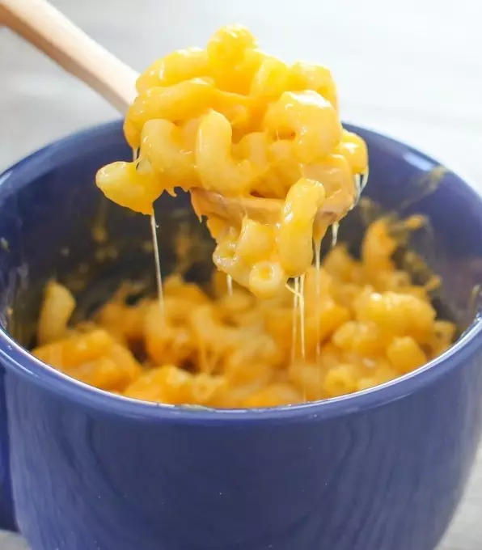
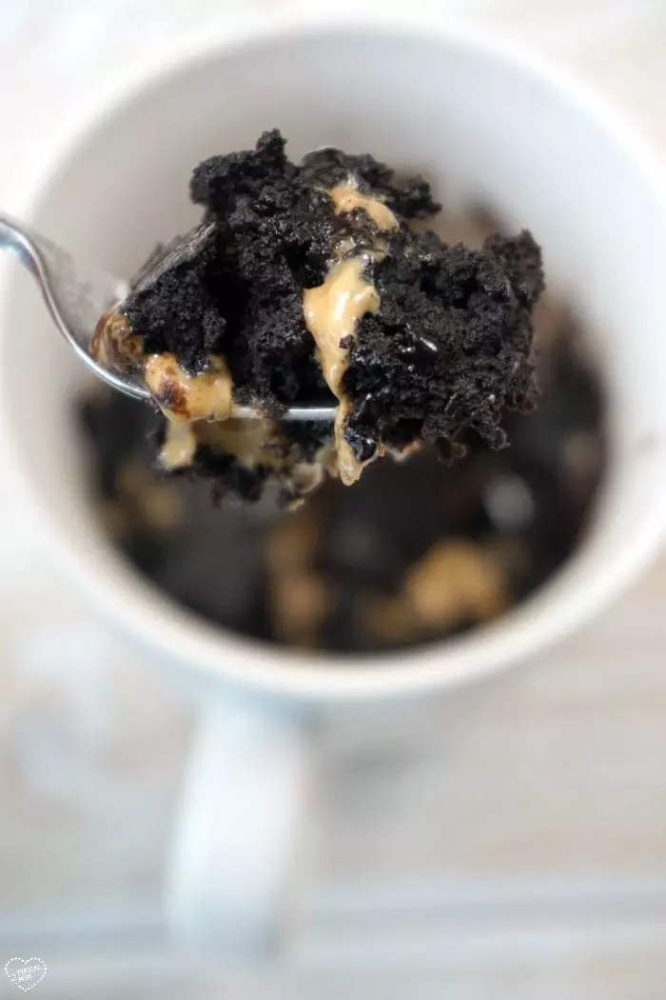

1.Egg Fried Rice
Since chopping up vegetables can be cumbersome, buy pre-cut bags of red cabbage slaw, shaved carrots, and frozen peas. And feel free to add other toppings like bacon bits or sesame seeds for even more flavor and texture. Recipe here.
2.Macaroni and Cheese
Since elbow macaroni and are such tiny, delicate pieces of pasta, they'll cook in less than four minutes in just your microwave. Just remember to pause the microwave at least two or three times to stir the pasta.Recipe here.
3.Egg, Mushroom, and Ham Cup
Eggs, sandwich meat, and sliced mushrooms come together in this filling breakfast recipe.Recipe here.